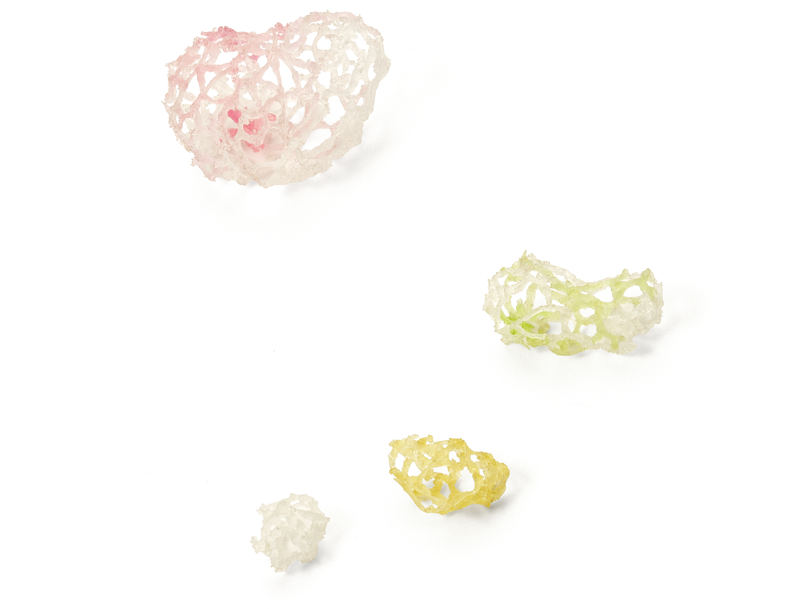

Sinsuro 107 - 1
2025 / Resin
At the end of a cold winter in February, I walked around my home, searching for plants. I thought I would not find anything in the frozen landscape.
But acorns hidden under fallen leaves, cherries grown on unreachable branches, magnolia branches discarded after pruning, and seeds from broken grasses beneath the flowerbed revealed themselves. Many plants that had always existed around me, quietly hidden.
While handling and observing these, I began to think that various plant species coexisting with one another resembles the apartment complex itself. Like 'Sinsuro 107,' where diverse people gather and live together, these plants also share the same space while maintaining their own identities.